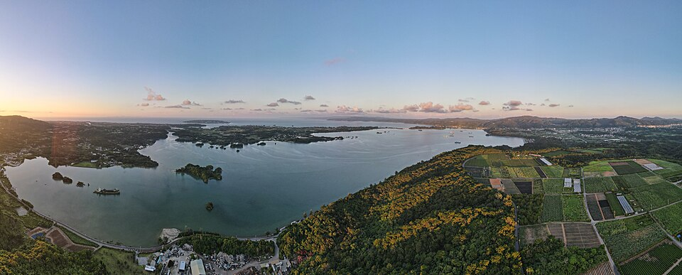

오키나와 가족여행 가이드
2026년 12월 24일(목) ~ 27일(일) · 3박 4일 · 어른 4명과 두 살 아들
- 항공 · 이스타항공
- 12/24 11:25 서울 출발 → 13:50 나하 도착
12/27 15:00 나하 출발 - 렌터카
- 12/24 14:30 나하공항 픽업
12/27 12:30 반납 · 7~8인승 미니밴 + 카시트 - 숙소 · 3박
- The Villas Machidoya
모토부정 이시카와 894-1 (유가후인 비세 옆) - 인원
- 나(40) · 아내(36) · 부모님(72·71)
아들 2년 8개월 (낮잠 필요)
걷기 난이도 (어머니 기준)
거의 안 걸음조금많이
· 운전 시간은 모두 추정치
날짜별 일정
나하공항 안내
나하공항 공식 사이트(한국어·일본어)와 렌터카 회사 안내 기준입니다. 셔틀 승강장 번호는 회사마다 달라서 예약 확인서의 번호가 우선입니다.
렌터카
숙소 주변 생활 정보
숙소(모토부 비세)에서 가까운 순서입니다. 위치는 OpenStreetMap 기준이고 영업시간은 표시된 출처대로라, 가기 전에 전화로 한 번 확인하세요.
긴급 연락처
119·110은 일본어만 됩니다. 말이 안 통하면 JNTO 핫라인(한국어, 24시간)에 먼저 걸어 통역을 부탁하세요. 아이가 아플 때 병원에 갈지 망설여지면 #8000(소아 전화 상담, 일본어)도 있습니다.
운전 메모
후기에서 찾은 팁
X 등 SNS의 개인 후기를 모은 것이라 참고만 하세요. 공식 정보가 아닙니다.
체크리스트
체크 상태는 이 휴대폰에만 저장됩니다.
출발 전 확인
짐 목록
비용 기록
엔으로 적으면 원화로 바꿔 보여줍니다. 환율은 유럽중앙은행 고시(Frankfurter)를 가져오고, 직접 고칠 수도 있습니다.
| 날짜 | 항목 | 엔 | 원 | |
|---|---|---|---|---|
| 합계 | 0 | 0 | ||
오프라인 저장
데이터가 잘 안 터질 때를 대비해 이 페이지, 사진, 날짜별 지도 타일을 휴대폰에 미리 저장합니다. 구글맵 오프라인 지도는 일본에서 지원되지 않아서, 데이터가 끊기면 이 저장본이 유일한 지도입니다. 와이파이에서 한 번 눌러 두세요.
출처
- 지도: © OpenStreetMap 기여자 · 지도 라이브러리 Leaflet · 경로 OSRM
- 날씨: Open-Meteo (예보는 여행 16일 전부터 표시) · 환율: Frankfurter (ECB)
- 운영시간·요금: 각 시설 공식 사이트, 2026년 10월 확인. 바뀔 수 있으니 출발 전 한 번 더 확인하세요.
- 생활 정보 위치·영업시간: OpenStreetMap 기여자 · 구급 병원: 오키나와현 구급의료기관 목록(2025-07) · 긴급 연락처: JNTO, 외교부 해외안전여행 · 통행료: 류큐신보 2024-03 보도
이 페이지는 개인용 여행 메모입니다. 검색엔진에 노출되지 않도록 설정되어 있습니다.